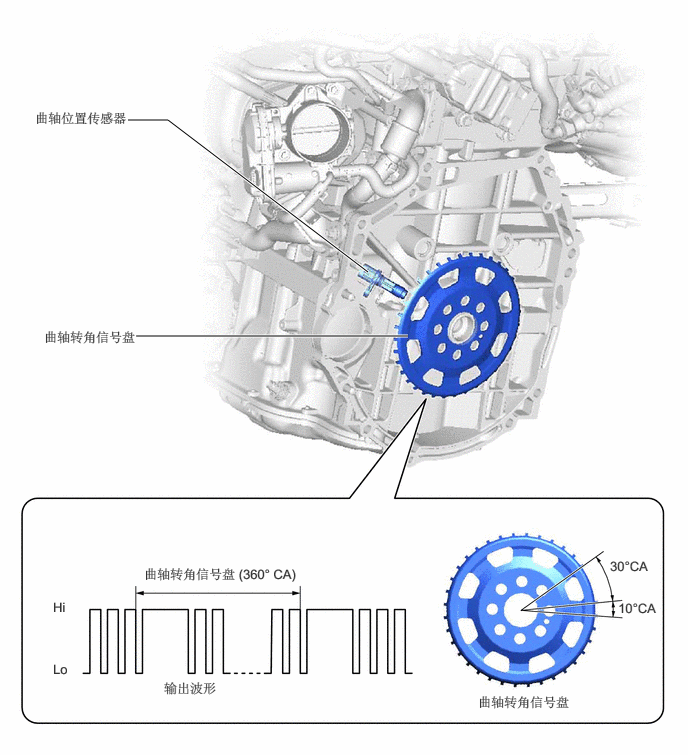

1.333,1.25 1.75,1.25
1.75,1.25 3.833,2.833
true
1.417,3.5 4.25,3.5
true
0.365,1.146 1.333,1.604
0.958,0.448
10
false
曲轴位置传感器
0.458,3.427 1.74,3.844
1.271,0.406
10
false
曲轴转角信号盘
1.5,5.896 3.781,6.135
2.271,0.229
10
false
曲轴转角信号盘 (360° CA)
0.552,6.24 0.75,6.458
0.188,0.208
10
false
Hi
0.552,6.885 0.75,7.104
0.188,0.208
10
false
Lo
1.708,7.083 2.927,7.344
1.208,0.25
10
false
输出波形
4.979,7.229 6.635,7.5
1.646,0.26
10
false
曲轴转角信号盘
6.354,5.813 6.865,6.052
0.5,0.229
10
false
30°CA
6.438,6.25 6.948,6.49
0.5,0.229
10
false
10°CA